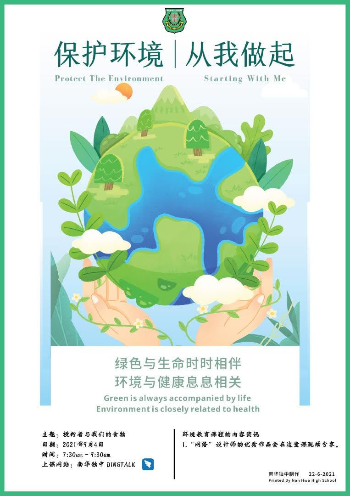

同学们，猜猜看，如果世界上的蜜蜂绝种了，会有什么后果呢？再也不会被蜜蜂蛰伤？没有
同学们，猜猜看，如果世界上的蜜蜂绝种了，会有什么后果呢？再也不会被蜜蜂蛰伤？没有甜滋滋的蜜糖可以吃？No no no，事情恐怕没那么简单！首先，少了蜜蜂的授粉，首当其冲就是植物没有办法结出果实，开始绝收，全人类的粮食危机便接踵而来！欲知详情，请记得出席本周六的环境教育课程。

同学们，猜猜看，如果世界上的蜜蜂绝种了，会有什么后果呢？再也不会被蜜蜂蛰伤？没有甜滋滋的蜜糖可以吃？No no no，事情恐怕没那么简单！首先，少了蜜蜂的授粉，首当其冲就是植物没有办法结出果实，开始绝收，全人类的粮食危机便接踵而来！欲知详情，请记得出席本周六的环境教育课程。
